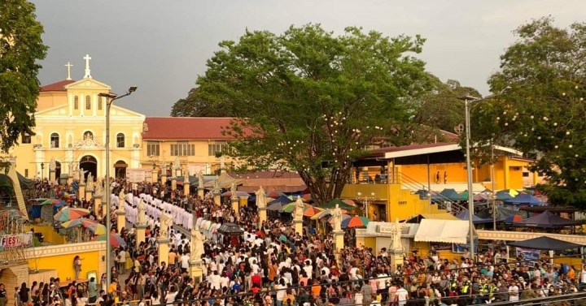

Travel News
8.4 M tourists visit Pangasinan in 2023
LINGAYEN, Pangasinan – Declaration of long weekends and added holidays, which the Marcos administration hopes to boost tourism growth, have been significant in the 23.53 percent increase in tourist arrivals in Pangasinan in 2023, a local official said.
Pangasinan Provincial Tourism and Cultural Affairs Office head Maria Luisa Amor-Elduayan, in a statement on Thursday, said tourist arrivals rose to 8.4 million in 2023 from year-ago’s 6.8 million due to “opportunity, cost-effectiveness, and availability of destinations.” Among the top five destinations in the province are Manaoag with 5.2 million tourist arrivals, followed by Bolinao town, 644,572 arrivals; Alaminos City, 519,907; capital town of Lingayen, 378,051 arrivals; and Binalonan town, 377,159 visitors.Lingayen hosts many big events such as the Pista’y Dayat on May 1 and various tourism fairs and the provincial museum, while Binalonan has established itself as a family-oriented destinations that have myriad of small businesses like food and souvenir shops.
Visa applications from PH breach pre-pandemic level by 35%
MANILA – The Philippines posted the highest growth in terms of visa applications across Southeast Asia, indicating restored travel confidence among Filipinos, visa service firm VFS Global reported Tuesday.In a briefing in Taguig, VFS Global head for Australasia Kaushik Ghosh said the volume of visa applications in 2023 surpassed the pre-pandemic level in 2019 by at least 35 percent.
“This healthy rise in visa applications from the Philippines last year indicates that travelers' confidence has been restored, and people are ready to explore their favorite global destinations again. We are confident that this positive travel momentum will sustain in 2024 as well," he said.
The visa service firm, citing restrictions to disclose further data, declined to provide the actual visa figures but said the most popular international destinations among Filipino applicants were Australia, Belgium, Canada, Denmark, Finland, Italy, Germany, Netherlands, Saudi Arabia and Switzerland. In the Philippines, VFS Global provides administrative visa services to travelers going to Australia, Austria, Belgium, Canada, Croatia, Czech Republic, Denmark, the United Arab Emirates, Finland, Italy, Germany, Greece, Hungary, Ireland, Lithuania, Malaysia, Malta, Netherlands, New Zealand, Nigeria, Norway, Saudi Arabia, Slovenia, South Africa, Sweden, Switzerland, the United Kingdom, Ukraine and the United States.
Padre Pio shrine in Batangas aims for int'l shrine status
MANILA – The National Shrine of Saint Padre Pio in Sto. Tomas, Batangas is looking to attain the status of an international shrine.
The Catholic Bishops’ Conference of the Philippines (CBCP) news website on Tuesday reported that the national shrine is aspiring for such stature, according to a book titled “Enlarging the Space of our Tent”, published by the Archdiocese of Lipa released on Jan. 13. The Vatican approves the designation of an international shrine, which classifies it as a sacred place for divine worship for the universal Church.
It was established in 2003 and declared as an archdiocesan shrine five years later. In 2015, it was recognized as a national shrine, which houses several first-class relics of the Italian saint, who spent most of his life in a monastery in southern Italy. Known for his stigmata and gift of healing, Padre Pio is one of the most revered saints of the 20th century. In 2018, his heart relic was brought to the shrine where many people trooped to pay homage to the saint. Currently, the Philippines has only one international shrine, which is dedicated to the Our Lady of Peace and Good Voyage in Antipolo City.

Palawan ranks 4th in Tripadvisor world’s trending destinations
MANILA – Palawan has been named the world’s fourth trending destination in Tripadvisor’s 2024 Travelers’ Choice Award Best of the Best Destination.
The award places the island together with popular destinations across the world, including Tokyo in Japan, Seoul in South Korea, Halong Bay and Sapa in Vietnam, Bogota in Colombia, Pattaya in Thailand, Casablanca in Morroco, and Taipei in Taiwan, among others. Perfect for multi-day and extended tours, Palawan offers a diverse travel experience to tourists from sun and beach to a relaxing nature trip in its world-class heritage sites. The Travelers’ Choice Award described Palawan as a “slice of heaven” teeming with exotic wildlife, quaint fishing villages, and UNESCO World Heritage Sites.
Tripadvisor’s winners were based on the reviews and opinions collected from travelers and diners on its platform over 12 months. “Travelers’ Choice Best of the Best is our highest honor. The award takes into account the quality and quantity of traveler reviews and ratings, and ranks the very best accommodations, destinations, beaches, restaurants, and things to do in specific categories and geographic areas, as rated and reviewed by travelers,” Tripadvisor said.
DOT digitizes Bicol tourist arrival for efficient delivery of services
LEGAZPI CITY – The Department of Tourism (DOT)-5 (Bicol) is utilizing an electronic record-keeping management tool to digitize tourist arrivals in the six provinces of the region.
DOT-5 Regional Director Herbie Aguas said the tourism operations protocol system (TOPS) launched on Monday would help collect and manage accurate, reliable, prospective and real-time tourist arrival data. "With the implementation of this system, we will be able to produce timely and accurate information on tourism statistics. The TOPS will also help in the formulation and conceptualization of responsive policies and programs for sustainable tourism development in the region," he said in a follow-up interview on Tuesday.
Aguas said the TOPS will extract actual visitor arrival data directly from the tourism enterprises. "Once they arrive in the Bicol region and go to a specific tourist destination, they will sign up on the page and the data will be directly submitted to DOT as well as to the local government unit (LGU). Aside from numbers that will be collected, we will also get reviews, we will get impressions of the tourist during their stay," he added. Aguas said Midconcept Solutions, a licensed software company, ensures the rollout and deployment of the TOPS are efficient and accessible to all.